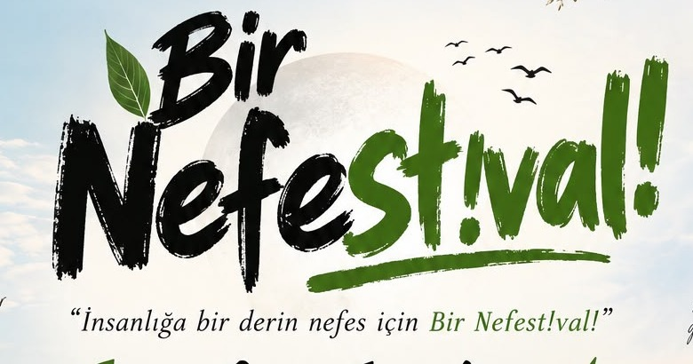
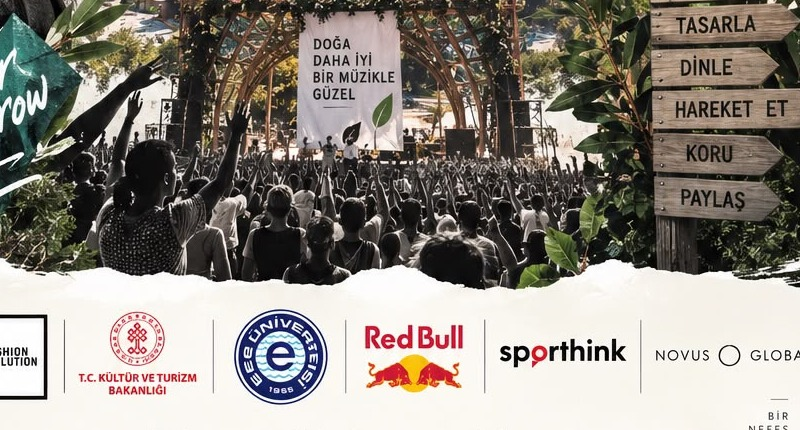
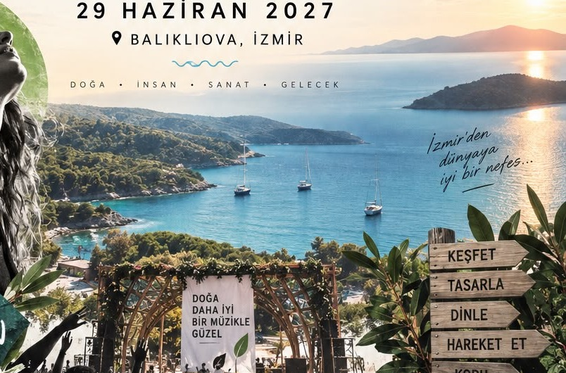
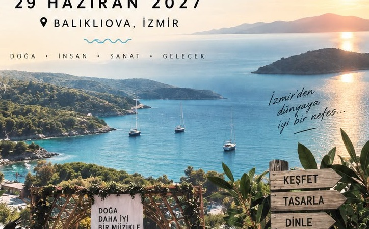
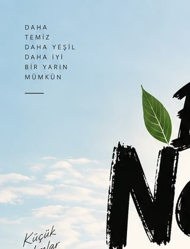

EGE'DEN DÜNYAYA İYİ BİR NEFES
Bir Nefest!val!
TARİH
29 Haziran 2027
Festival ana günü
LOKASYON
Balıklıova, İzmir
Ege sahil rotasında özel deneyim
RUH
Good People, Greener Tomorrow
İyi insanlarla daha iyi bir gelecek
Bir Nefest!val!
Doğa, insan, sanat bir arada.
Bir Nefest!val!; müziği, tasarımı, sporu, yeşil dönüşümü ve kolektif üretimi aynı deneyimde buluşturmak için tasarlanmış yeni nesil bir festival kurgusu. Amaç yalnızca kalabalık bir gün geçirmek değil; insanın iyi hissettiği, hareket ettiği, öğrendiği, bağ kurduğu ve doğaya zarar vermeden eğlenebildiği güçlü bir atmosfer kurmak.
01 · FESTİVAL KİMLİĞİ
Bir festival nasıl hatırlanır hale gelir?
Kalıcı etki, sadece sahne kurulunca oluşmaz. Duygu dili, rota kurgusu, akış, katılımcı deneyimi, kampüs bağlantıları, sürdürülebilirlik kararları ve hikâye anlatımı birlikte çalıştığında oluşur. Nefest!val web sitesi de bu yüzden yalnızca bilgi veren bir sayfa değil; markanın tavrını hissettiren yaşayan bir dijital sahne olarak düşünülmüştür.
İnsanı iyi hissettiren deneyim
Sabah saatlerinde yoga, nefes ve hareket alanları; gün içinde tasarım, üretim, keşif ve paylaşım; akşam ise güçlü müzik akışı. Böylece festival sadece bir konser günü değil, tam gün yaşayan bir deneyim haline gelir.
Görsel dilin merkezinde Ege
Deniz tonları, toprak renkleri, yaprak formları ve organik tipografi, posterdeki duyguyu dijitale taşıyor. Ziyaretçi daha ilk ekranda lokasyonun ve hikâyenin neye dayandığını anlıyor.
İzleyen değil, dahil olan kitle
Bu site; ön kayıt alan, gönüllü toplayan, kampüsleri sisteme dahil eden, sponsorla görüşme açan ve yerel işletmeleri ekosisteme bağlayan bir platform olarak kurgulandı. Yani dijital yüzey, doğrudan üretim mekanizması gibi çalışıyor.
02 · POSTER EVRENİ
Poster sadece afiş değil; bütün dijital evrenin çekirdeği.
Kullanıcı tarafından paylaşılan afiş, festivalin tonunu belirleyen ana yaratıcı malzeme olarak siteye yayıldı. Aşağıdaki sahneler, bu görselin içindeki katmanların web deneyimine nasıl dönüştürüldüğünü anlatıyor.

MARKA DİLİ
Cesur tipografi, doğal semboller, hafızada kalan imza
Logonun dijital karşılığı için brush etkili güçlü başlıklar, hareketli yaprak sembolleri, akışkan ışık çizgileri ve doğal renk paleti birlikte kullanıldı. Bu sayede marka hem enerjik hem de sıcak görünüyor.

DUYGU
İnsana iyi gelen festival algısı
Afisteki insan portresi, festivalin yalnızca eğlence değil iyi hissetme fikrine dayandığını anlatıyor. Site içinde bu yaklaşım, “nefes”, “iyi hisset”, “yenilen”, “bağ kur” gibi doğal bir dille destekleniyor.

RİTİM
Sahne coşkusu kontrollü kurguyla birleşiyor
Kalabalık sahne alanı, ana etkinlik enerjisini taşıyor. Web sitesinde bu duygu; program akışı, alan zonları, gece deneyimi ve ziyaretçiyi yönlendiren akış mantığı ile devam ettirildi.

YÖNLENDİRME
Keşfet, tasarla, dinle, hareket et, koru, paylaş
Posterin yön levhası, sitenin bilgi mimarisine dönüştürüldü. Bölümler ziyaretçiyi sürekli yeni bir keşfe çağırıyor: deneyim alanları, başvuru akışları, ulaşım rehberi ve yeşil dönüşüm stratejileri bir bütün halinde sunuluyor.
03 · DENEYİM ALANLARI
Festival alanı bir mini ekosistem gibi çalışmalı.
Her deneyim alanının ne yapacağı kadar, neden orada olduğu ve nasıl işletileceği de açık olmalı. Bu bölüm; bir festivalin içerik tasarımı ile operasyon mantığını birlikte anlatır.
Main Stage
Büyük konserler, açılış anları ve yüksek görünürlüklü buluşmalar.
Sunset Stage
Manzara ile bütünleşen gün batımı ritmi.
Nefes Lab
Bilim, malzeme, çevre ve gündelik hayat atölyeleri.
Movement Arena
Yoga, spor, nefes ve canlı enerji.
Aegean Market
Yerel üretim, yaratıcı satış ve gastronomi.
Reset Zone
Dinlen, nefeslen, ritmini yeniden kur.
04 · NASIL ÇALIŞIR?
İçerik kadar operasyon planı da görünür olmalı.
Profesyonel bir festival hissi veren siteler yalnızca güzel görünmez; insanlara sürecin ne kadar iyi düşünüldüğünü de hissettirir. Bu yüzden aşağıdaki kartlarda her ana başlığın nasıl çalışabileceği doğal bir dille anlatılıyor.
Program akıllı şekilde katmanlanır
Sabah saatlerine daha sakin ve bedeni aktive eden içerikler yerleştirilir. Öğle ve ikindi saatlerinde keşif, üretim ve topluluk buluşmaları devreye girer. Ana sahne trafiği gün batımından geceye taşınır. Böylece tüm kitlenin aynı anda tek noktaya yığılması azaltılır.
Ziyaretçi ne yapacağını düşünmeden anlayabilmeli
Web sitesindeki yönlendirme dilinin amacı budur. “Keşfet”, “hareket et”, “koru”, “paylaş” gibi net aksiyonlar, festival alanında da levhalara ve dijital ekranlara aktarılırsa kişi karar vermekte zorlanmaz.
Başvuru merkezleri doğrudan veri üretir
Ön kayıt, gönüllü, sponsor, kampüs, vendor ve yerel işletme akışlarının tek dijital yapı içinde bulunması; ekibin farklı Excel dosyaları arasında kaybolmasını önler. Bu yapı daha sonra gerçek CRM ve operasyon araçlarına kolayca bağlanabilir.
Açık ve dürüst dil güven oluşturur
Henüz kesinleşmeyen unsurlar, kesinleşmiş gibi sunulmaz. Bilet, kamp, ulaşım, işbirlikleri ve line-up duyuruları için net statü dili kullanılır. Bu yaklaşım markayı daha güvenilir gösterir.
05 · YEŞİL DÖNÜŞÜM
Yeşil dönüşüm festivalde slogan olarak değil, sistem olarak yaşamalı.
Bu bölüm özellikle bilgilendirici tasarlandı. Kartların üzerine geldiğinde çıkan konuşma balonları; festival kapsamında gerçekten neler yapılabileceğini somut bir dille anlatır.
Atık yönetimi
Geri dönüşüm kutuları tek başına yetmez. Girişten itibaren ayrıştırılmış atık adaları, backstage atık planı, vendor atık kuralları ve gün sonu ölçüm sistemi kurulmalıdır.
Su ve refill kültürü
Ziyaretçinin kendi matarasını getirmesi teşvik edilebilir. Alanda ücretsiz veya düşük maliyetli su dolum noktaları kurulursa hem konfor hem sürdürülebilirlik birlikte güçlenir.
Ulaşımda dönüşüm
Bornova, Alsancak, Konak ve Fahrettin Altay çıkışlı toplu festival shuttle hatları özel araç yoğunluğunu azaltır. Bu hem çevresel hem de lojistik açıdan en kritik kararlardan biridir.
Yerel ekonomi
Karaburun ve çevresindeki üreticiler, tasarımcılar, konaklama işletmeleri ve hizmet sağlayıcılar sisteme dahil edildiğinde festival bölgeyle daha sağlıklı ilişki kurar.
Enerji planı
Enerji altyapısı yalnızca sahne için düşünülmemelidir. Vendor alanları, yönlendirme, kamp güvenliği, şarj istasyonları ve acil durum sistemleri de bütünlüklü enerji planına bağlı olmalıdır.
Ölçüm ve raporlama
Toplanan atık miktarı, shuttle kullanımı, yerel vendor sayısı, su tasarrufu ve gönüllü katkısı gibi metrikler ölçülürse festivalin etki hikâyesi sayı ile desteklenir.
06 · KONUM & ULAŞIM
Ege Üniversitesi'nden denize uzanan festival rotası.
İstenen güzergâh mantığı doğrultusunda Bornova Ege Üniversitesi, Alsancak, Konak ve Fahrettin Altay üzerinden Balıklıova yönüne akan rota özel bir bölüm olarak tasarlandı. Her durak, ziyaretçinin “buradan nasıl gelirim?” sorusuna net cevap verecek şekilde anlatılıyor.
Bornova · Ege Üniversitesi
Kampüs toplulukları ve öğrenci katılımcıları için doğal ilk çıkış noktası. Toplu buluşma alanı ve shuttle organizasyonu burada kolaylıkla kurgulanabilir.
Haritada açAlsancak
Şehir merkezi, tren, vapur ve yaşam akışı açısından en güçlü duraklardan biri. Festival öncesi şehir içi enerji burada hissedilmeye başlar.
Haritada açKonak
Farklı ilçelerden gelen katılımcıların birleşebileceği merkezi bir transfer noktası. Kent içi toplu taşımayla gelen ziyaretçiler için mantıklı bir kesişim bölgesi oluşturur.
Haritada açFahrettin Altay
Güney aksından katılım için güçlü bir toplama noktasıdır. Urla ve yarımada tarafına çıkacak toplu hareket planlarında lojistik olarak önemlidir.
Haritada açBalıklıova · Festival Bölgesi
Deniz, açıklık hissi ve nefes metaforunu gerçek mekân duygusuna dönüştüren son durak. Festival ana koordinatı ve saha giriş planı, operasyon netleştikçe bilet sahipleriyle paylaşılacak şekilde kurgulanabilir.
Haritada aç


07 · BAŞVURU MERKEZİ
Festivalin içine girmek için ihtiyacın olan bütün kapılar burada.
Bu bölümdeki formlar yalnızca görünüş için eklenmedi. Ön kayıt, gönüllü, kampüs ağı, vendor, sponsor, yerel işletme ve basın başvurularının tek çatı altında toplanması; ekip için güçlü bir operasyon tabanı oluşturur.
Ön kayıt oluştur
Bu form, line-up açıklamaları, erken erişim biletleri, yol haritası ve yeni duyurular için temel ilgi havuzunu oluşturur. Kısa, anlaşılır ve gereksiz alanlardan arındırılmış olduğu için daha yüksek dönüşüm hedefler.
Gönüllü programı
Festival gönüllülüğü; yalnızca yönlendirme değil, içerik üretimi, sahne arkası destek, sürdürülebilirlik uygulamaları, karşılama, topluluk yönetimi ve bilgi noktaları gibi birden fazla alandan oluşmalıdır.
Campus Network
Üniversite toplulukları Nefest!val'in büyümesinde stratejik rol oynayabilir. Bu ağ; topluluklara yalnızca tanıtım yaptırmak için değil, sahne, atölye, gönüllü ekip ve Nefes Lab üretimi için de tasarlanmıştır. Özellikle Ege Üniversitesi Genç Kimyagerler Topluluğu gibi yapılar; yeşil kimya, geri dönüşüm, malzeme farkındalığı ve bilim iletişimi başlıklarında güçlü katkı sunabilir.
Vendor / üretici başvurusu
Festivalin ticari alanları rastgele değil; marka uyumu, ürün kalitesi, sürdürülebilirlik yaklaşımı ve ziyaretçi deneyimine katkı kriterleriyle seçilmelidir.
Sponsor görüşmesi
Bu yapı, markalara yalnızca logo alanı sunmak yerine deneyim, veri, görünürlük ve içerik birlikte tasarlama şansı vermek için kuruldu. Ulaşım, Nefes Lab, hareket alanı, sürdürülebilirlik, teknoloji ve hospitality başlıkları özellikle uygundur.
Basın / Creator akreditasyonu
Basın ve içerik üretici ilişkileri için standart akreditasyon akışı gerekir. Bu form; hem gelen talepleri düzenli toplamak hem de yayın planını erken hazırlamak için düşünülmüştür.
08 · EKOSİSTEM
Festivalin çevresinde oluşabilecek güçlü ortaklık kümesi.
Poster üzerinde yer alan kurum ve marka işaretleri, festivalin ilham aldığı işbirliği ekosistemini görünür kılıyor. Bu alan, benzer nitelikte kurumlarla çalışılabilecek başlıkları profesyonel biçimde sergilemek için tasarlandı.
Goethe-Institut
Fashion Revolution
Kültür ve Turizm Ekosistemi
Ege Üniversitesi
Red Bull
Sporthink
Novus Global
Kültür & içerik
Müzik, tasarım, sürdürülebilirlik ve şehir kültürü kesişimindeki kurumlarla uzun vadeli kültürel işbirlikleri geliştirilebilir.
Kampüs & bilim
Ege Üniversitesi ve benzeri akademik ağlar; Nefes Lab, öğrenci toplulukları, gönüllülük ve araştırma temelli iletişim için değerli ortaklardır.
Marka deneyimi
Enerji içeceği, hareket, teknoloji, ödeme sistemleri ve aktif yaşam markaları festival deneyimini zenginleştiren ana partner kümeleri olarak değerlendirilebilir.
09 · SIK SORULANLAR
İşin özü açık, dili doğal olsun.
Bu kısım, kullanıcıya güven veren net cevaplar vermek için hazırlandı. Gereksiz kurumsal kalıplar yerine, gerçekten açıklayıcı bir dil kullanıldı.
Festival neyi farklı yapmayı hedefliyor?
Nefest!val'in farkı, müziği tek merkezli bir deneyim olarak bırakmaması. Burada sahne kadar doğa, hareket, tasarım, yerel üretim ve sürdürülebilirlik de programın ana parçası olarak düşünülüyor. Yani ziyaretçi yalnızca konser izlemeye değil, bütünsel bir atmosfer yaşamaya geliyor.
Neden web sitesinde bu kadar detaylı anlatım var?
Çünkü profesyonel festival siteleri yalnızca “bilet al” diyen yüzeyler değildir. İnsanlar bir festivale para, zaman ve enerji ayırmadan önce; orada kendilerini nasıl hissedeceklerini, neler yaşayacaklarını ve organizasyonun ne kadar ciddi düşünüldüğünü görmek ister.
Yeşil dönüşüm gerçekten uygulanabilir mi?
Evet, fakat yalnızca niyet cümleleriyle değil. Refill istasyonları, depozitolu cup sistemi, shuttle ağı, yerel vendor ağı, ölçüm mekanizması ve festival sonrası etki raporu gibi somut uygulamalar bir araya geldiğinde gerçek dönüşüm başlayabilir.
Campus Network neden önemli?
Çünkü üniversite toplulukları yalnızca tanıtım gücü sağlamaz. Program üretir, gönüllü ekibi güçlendirir, bilim ve içerik alanlarını besler, festival kültürünü sahiplenir. Bu da markanın daha organik büyümesini sağlar.
Bu site gerçek sisteme bağlanabilir mi?
Evet. Şu anda taşınabilir ve bağımsız çalışacak şekilde hazırlanmıştır. Ancak tasarım mantığı; gerçek CRM, mailing, biletleme, analitik, başvuru yönetimi ve sponsor takip altyapılarına bağlanabilecek şekilde kurgulanmıştır.
SON ÇAĞRI
Bir Nefest!val! için yerini şimdiden ayır.
Festival büyürken ilk duyanlardan biri olmak, ekosistemin parçası haline gelmek ve gelişmeleri kaçırmamak için ön kayıtla başlayabilirsin.